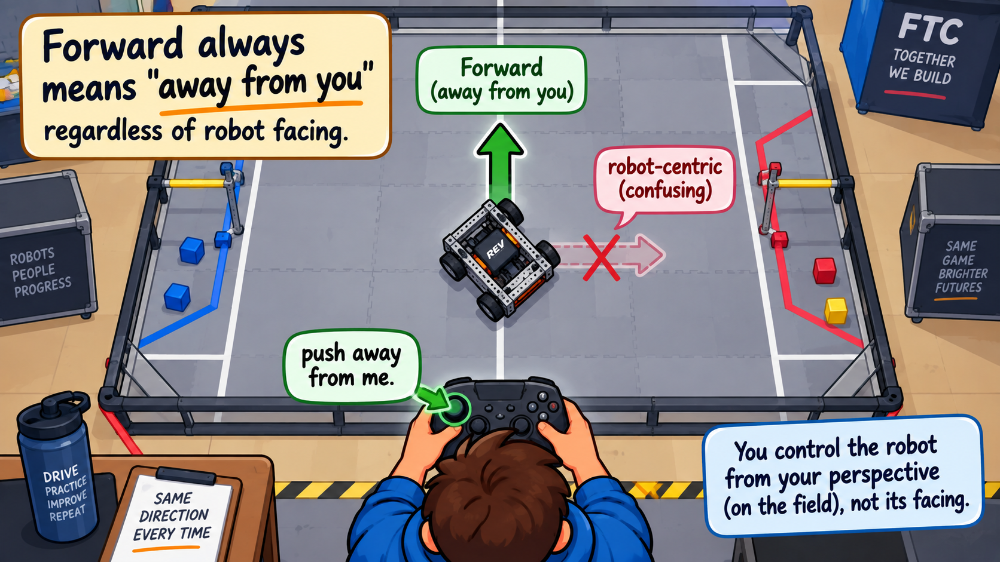
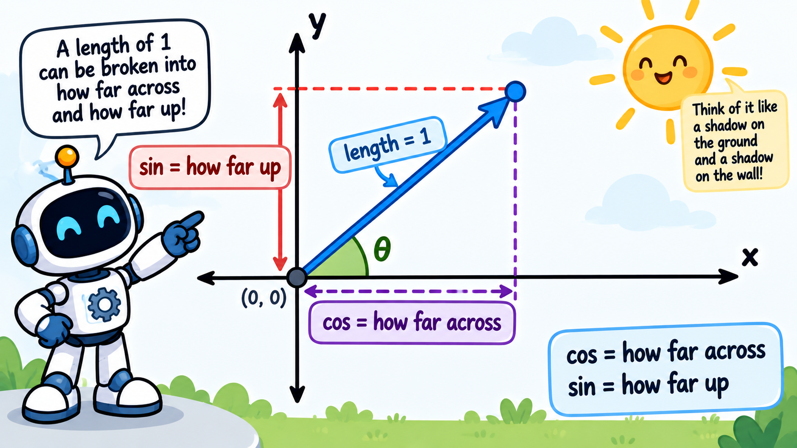
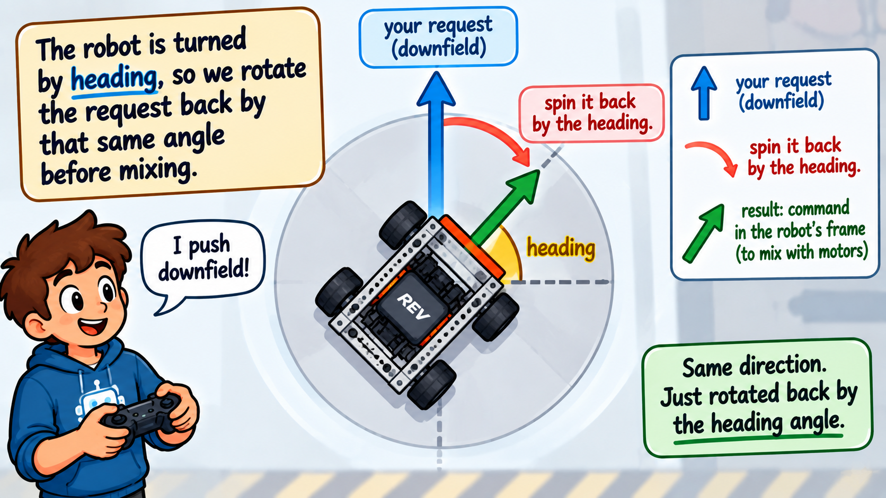

Your robot drives — but "forward" on the stick means "the way the robot is pointing." Once the robot spins around, forward looks backward to the driver, and steering gets confusing fast.
Field-centric driving fixes that. "Forward" on the stick always means "away from the driver," no matter which way the robot faces. To do it, we rotate the driver's request by the robot's current heading before mixing the wheels.
Before we mix the wheels, we spin the driver's request by the robot's heading so that “forward” always means away from the driver. That's it — but honestly, that sentence hides three big ideas stacked on top of each other. This is one of the hardest concepts in the whole course, so we're going to take it slowly, one layer at a time. Read this page without rushing; it's normal to go through it twice.
Imagine you're driving. Your robot rolls out, then spins halfway around to grab a game piece. Its front bumper is now pointing straight back at you. You push the left stick up — the direction that used to send it downfield — and the robot drives toward you instead. To send it away, you now have to push down. Turn the robot a quarter more and now you have to push sideways. Every time the robot rotates, your controls rotate with it, and your brain has to do the math mid-match. That is robot-centric driving, and it's exhausting.
We want the opposite: no matter how the robot is twisted around, pushing the stick away from your body should always send the robot downfield, away from you. That's field-centric driving.
The whole confusion comes from the word “forward” meaning two different things:
Robot-centric driving obeys the robot's forward; field-centric driving obeys yours. The picture below is the goal: the robot's front is turned sideways, but a push “away from me” still drives it straight downfield.

Here's the catch that makes this necessary. The mecanum mix you wrote last lesson thinks purely in robot terms: it knows “drive the robot toward its own front” and “strafe the robot toward its own side.” The wheels have no idea where you're standing. So if the driver's stick is speaking in field directions (“downfield, please”) but the wheels only speak robot directions, someone has to translate the request from field-language into robot-language before the wheels ever see it.
That translation is the entire job of this lesson. And it turns out the translation is a rotation: if the robot is turned by some angle, its idea of “forward” is off from yours by that same angle, so we rotate the driver's arrow by that angle to line the two up.
To rotate an arrow in code, we need cos and sin. Take a breath — you do
not have to master trigonometry here. You only need one mental picture, and this is
it.
Picture an arrow of length 1 starting at a center dot and tilted at some angle. That arrow reaches a
certain distance across (left-to-right) and a certain distance up (toward the
top of the field). Those two reaches are all that cos and sin are:
Math.cos(angle) = how far the arrow reaches across (its shadow on the
floor).Math.sin(angle) = how far the arrow reaches up (its shadow on the wall).Watch what happens at the extremes, because this is what makes it click:
cos = 1; it has no height at all, so sin = 0.cos = 0;
its wall-shadow is full, so sin = 1.So as the arrow spins, cos and sin slide smoothly between those extremes. They are simply the two numbers that pin down which way an arrow points. That's the whole idea — nothing more.

cos is how far it reaches across, sin is
how far it reaches up. Those two numbers are the arrow's direction.Now we have all the pieces. Your stick push is an arrow that points where you want to go on the
field (the blue arrow below). The robot, meanwhile, is
turned by its heading, as if it's parked on a spun-around turntable. To hand the wheels a command
they understand, we take your blue arrow and spin it backward by the heading (the
red curved arrow). What comes out is the very same push, just
expressed in the robot's own frame (the green arrow) —
and that is what we feed into the mecanum mix. The cos and sin shadows are the machinery that performs
the spin.

heading. Green = the
same request, now in the robot's frame — ready for the wheels. Same direction, just rotated to match the
robot.Why backward (a minus sign on the heading)? Because we're not turning the robot — we're un-turning the request. If the robot is rotated one way, we rotate the driver's arrow the opposite way by the same amount, and the two cancel out. That leftover is a push measured in robot terms, which is exactly what the wheels need.
Open Drivebase.java and find the spot just before the mecanum mix, where forward and
right are set from the raw sticks.
// cos and sin capture how far the robot is turned. We use -headingRadians to spin the
// driver's request the OPPOSITE way, which cancels out the robot's rotation.
double cos = Math.cos(-headingRadians);
double sin = Math.sin(-headingRadians);
// Spin the stick vector by -heading so "away from the driver" stays "away from the driver",
// then feed the rotated forward/right into the same mecanum mix you wrote last lesson.
right = strafe * cos - drive * sin; // the sideways part, after the spin
forward = strafe * sin + drive * cos; // the forward part, after the spincos and sin, for the
backward spin (notice the minus sign on headingRadians).forward and right after
the spin. Each output is a blend of the two inputs (drive and strafe), weighted by
those shadows — that blend is the rotation.forward and right values then flow straight into the same mecanum mix
from last lesson, which never even knows a rotation happened.Case 1 — the robot is already facing downfield (heading = 0). Then cos = 1
and sin = 0, so right = strafe and forward = drive. The push passes
through unchanged — exactly what we'd want when the robot is lined up with the field. The rotation
quietly does nothing.
Case 2 — the robot is turned a quarter-turn. Now cos = 0 and
sin = ±1. Push straight away from yourself (drive = 1, strafe = 0)
and the math turns it into forward = 0, right = 1 — a pure sideways
command. That looks strange until you remember the robot is sitting sideways: to travel downfield, a
quarter-turned robot has to strafe to its own side. The formula figured that out for you. The driver just
pushed “away,” and the robot went downfield.
The headingRadians value is handed in every loop — it comes straight from the
IMU you set up last lesson. Because the sensor is already reporting a real heading, this rotation
takes effect the moment you add it: turn the robot and “forward” stays pointed away from you.
Remember the right bumper resets the heading to 0 — it re-zeros "forward" to whichever
way the robot is currently facing. Press it at the start of a match with the robot pointed downfield.